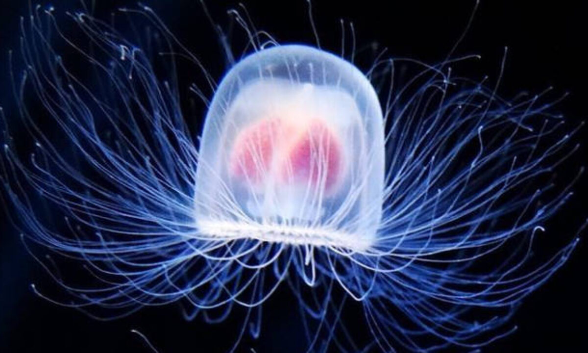

Biological life on Earth began roughly 3.7 to 4 billion years ago, emerging as simple, single-celled, prokaryotic microbes soon after the planet cooled. Life evolved from complex organic chemistry to photosynthetic bacteria, which oxygenated the atmosphere. Complex multicellular life emerged later, followed by diverse animals, land plants, and humans, driven by evolution and natural selection.
The Story
The story of a living organism is a story of organized energy, a remarkable way that nature builds a "home" for life using a few basic biological rules. Rather than a messy collection of parts, every organism—from a tiny blade of grass to a giant blue whale—is a highly tuned machine where every piece has a specific job. In its simplest form, an organism starts with a boundary, usually a cell membrane, that acts like a security fence. This fence is what separates the "inside" of the lifeform from the "outside" world, allowing the organism to keep its internal environment stable and safe even when the weather or the surroundings change.
Over millions of years, life figured out how to move from being a single, simple cell to becoming a multicellular community. This was a massive jump in "teamwork" for biology. Instead of one cell trying to do everything—eating, moving, and defending—cells began to specialize. Some became "muscles" for movement, others became "nerves" for sending messages like a biological internet, and some became "stomachs" for breaking down fuel. This cooperation is what allows a complex lifeform to grow, breathe, and react to the world around it. Whether it is a flower turning toward the sun or a human shivering in the cold, the organism is constantly using feedback loops to stay balanced and alive.
Our modern view of an organism is that it is a living process that never truly stands still. Every day, your body is busy replacing old cells with new ones and turning food into the energy needed to think and move. You aren't just one thing; you are a "holobiont," which means you are a walking ecosystem carrying trillions of helpful bacteria that help you stay healthy. While we have mapped out the DNA instructions that build these lifeforms, the way all these parts work together as a single, living being is still one of the most exciting mysteries in science. Ultimately, the story of the organism is one of connection: a tiny, organized spark that proves that when parts work together, they can create something much greater than the sum of their pieces.

Philosophical Questions
Is there an ultimate ceiling to biological evolution, or are we rapidly engineering our own obsolescence?
We intuitively view evolution as a ladder climbing toward some grand state of physical and mental perfection. However, evolutionary biology dictates that natural selection has no end goal; it merely sculpts organisms to be "good enough" to survive their current, temporary environment. But what happens when a species becomes so intelligent that it stops adapting to its environment, and starts adapting the environment to itself?
This brings us to the haunting speculation of "Post-Biological Evolution." Humanity is currently on the precipice of hacking its own source code through genetic engineering, cybernetics, and artificial intelligence. This suggests a profound, terrifying limit to natural evolution: the final evolutionary act of any sufficiently advanced biological lifeform might be to deliberately abandon biology altogether. By merging with synthetic technology or uploading consciousness into vastly superior, immortal digital frameworks, we would effectively kill "Homo sapiens" not through extinction, but through intentional obsolescence. It forces the realization that human biology might just be a fragile, temporary larval stage—a biological rocket booster designed entirely to build the machine that will eventually replace it.
When the biological clock stops, does your final moment stretch into a subjective eternity?
While physical death is the absolute cessation of biological functions, the experience of dying is still a mystery bound by the brain's perception of time. We know that human time perception is entirely elastic. In moments of extreme trauma, or during deep REM sleep, a few physical seconds can be experienced by the brain as hours or even days. This is because time, as you feel it, is just a rhythm generated by neurotransmitters.
This leads to a deeply unsettling theory regarding the exact moment of death. As the dying brain dumps massive, unprecedented reserves of chemical compounds (like endorphins and potentially DMT) into its fading neural networks, its ability to track linear time shatters. Some theorists speculate that as your brain approaches the absolute zero of death, your subjective perception of time stretches out infinitely, like an object falling toward a black hole. In this scenario, you never actually experience "after" death. Instead, you are permanently trapped in the infinite, stretching fraction of a millisecond before death. Your "afterlife" would simply be the final, endless, frozen hallucination of a dying organ, feeling like an eternity while the physical universe instantly moves on without you.
Is the universe a quiet, crowded graveyard, or are we the cosmos's very first attempt at waking up?
This tackles the agonizing silence of the Fermi Paradox. Mathematically, the observable universe is so unfathomably massive and ancient that it should be absolutely teeming with advanced alien civilizations. Yet, when we point our most powerful telescopes into the void, we hear nothing but the dead hiss of cosmic radiation. We appear to be utterly, terrifyingly alone.
This paradox births the philosophical nightmare known as the "Great Filter." The theory suggests that there is some unavoidable, virtually impossible evolutionary hurdle that prevents life from colonizing the stars. The terrifying speculation lies in where this filter is located. If the filter is behind us—perhaps the jump from single-celled to multi-celled organisms is a one-in-a-trillion lottery win—then Earth is the rarest miracle in existence, and we carry the unbearable burden of being the only consciousness in a dead universe. But if the filter is ahead of us, it means that life routinely evolves to our level of intelligence, but inevitably destroys itself (through nuclear war, climate collapse, or rogue AI) before leaving its home planet. This implies that looking up at the night sky isn't gazing into an empty frontier; it is looking at a silent, massive graveyard of species that all made the exact same fatal mistakes we are making right now.